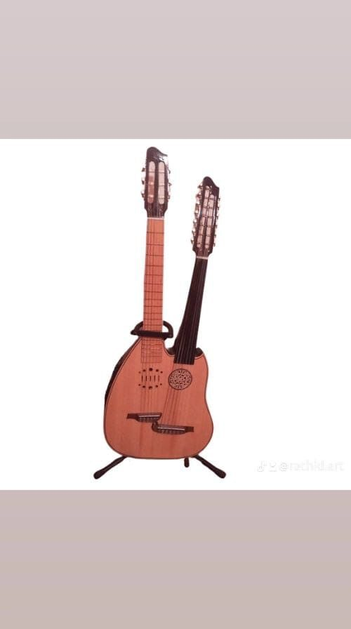

2026 · إصدار
تافيلالت — Tafilalet
عمل فني يحتفي بأرض الجذور ووادي زيز والواحات وذاكرة الطفولة.
استمع الآن ↗

رشيد حداوي — فنان موسيقي مغربيRACHID HADDAOUI — ARTISTE MUSICIEN MAROCAIN
كاتب كلمات وملحن ومغنٍ وعازف على آلتي العود والقيتارة، يمزج رشيد حداوي بين الموروث البلدي لتافيلالت والألوان الكناوية والحسانية والنفَس الموسيقي المعاصر.Auteur, compositeur, chanteur et musicien au oud et à la guitare, Rachid Haddaoui fait dialoguer le patrimoine beldi du Tafilalet avec les couleurs gnawa, hassanies et contemporaines.
مختارات فنية
مسار فني يجمع بين الذاكرة والزجل والبحث الموسيقي. تصفّح الأعمال حسب الفئة أو السنة.
عمل فني يحتفي بأرض الجذور ووادي زيز والواحات وذاكرة الطفولة.
استمع الآن ↗
مشروع بلدي تراثي بروح موسيقية معاصرة.

تعاون غنائي مع خالد الحمري.

عمل من المسار الفني لرشيد حداوي.
مقطع للاستماع
استمع إلى مقطع يعكس الهوية الفنية والحسّ الموسيقي لرشيد حداوي.
المسار الفني
رشيد حداوي فنان موسيقي مغربي من تافيلالت، يمتد مساره الفني لأكثر من ثلاثين سنة. كاتب كلمات وملحن ومغنٍ وعازف على العود والقيتارة، واشتغل ضمن العمل الجمعوي والمهرجانات والمحطات الفنية والإعلامية.
تستند تجربته إلى الدق البلدي لتافيلالت، مع انفتاح على الألوان الكناوية والحسانية والموسيقى المغربية المعاصرة.
ملف توثيقي للأعمال الفنية والمشاركات والمهرجانات والمحطات الإعلامية والشهادات المهنية، مخصص لتقديم المسار الفني والوثائق الداعمة له.
يُعرض ملف PDF الفني من داخل الموقع عند إضافته إلى مجلد الوثائق.
صور من المسار


البرمجة الفنية · الصحافة · التعاون
Rachid Haddaoui · Dakhla, Maroc